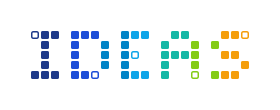
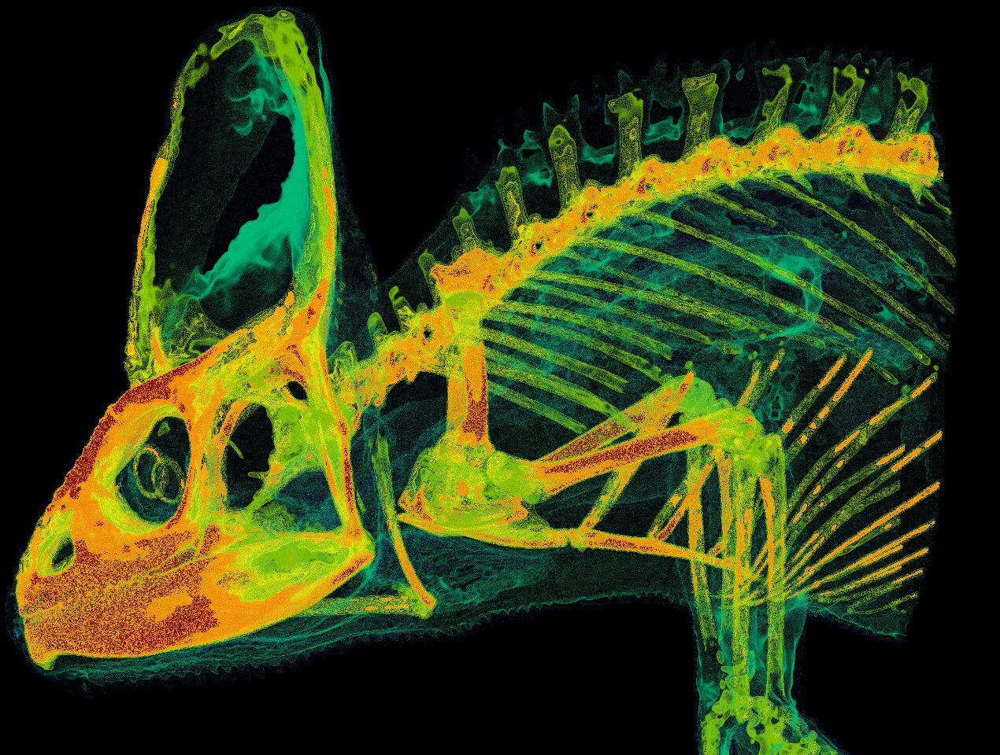
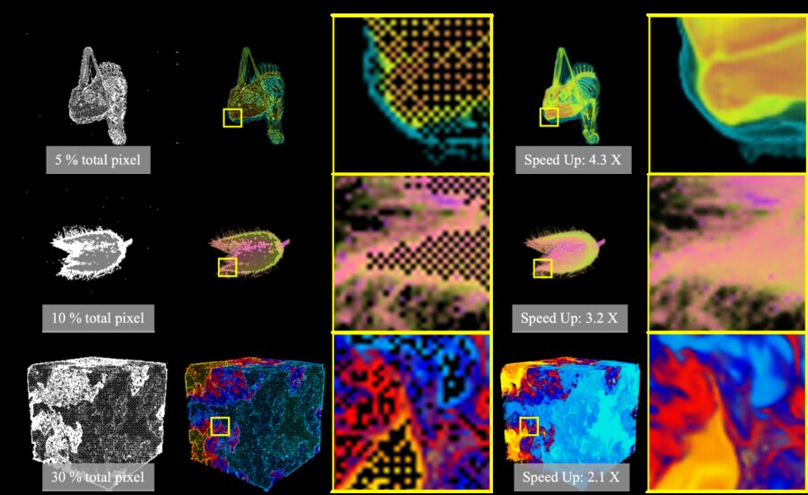
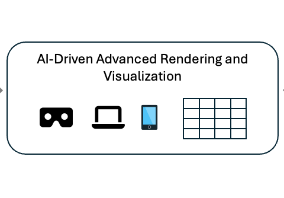
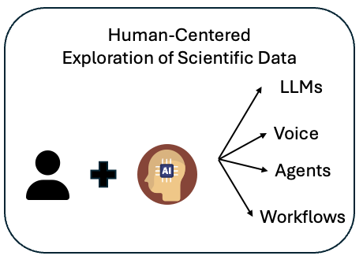
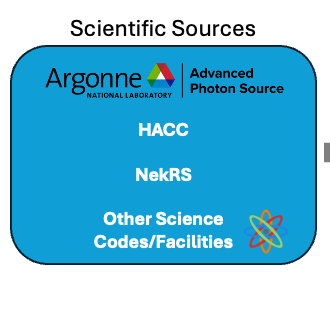
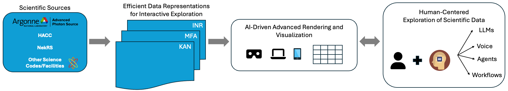

All-Hands Meeting
IDEAS All-Hands Meeting
–
DOE ASCR · Argonne Base · Thrust 2

IDEAS couples AI-powered visualization and context-aware exploration with compact, computation-ready data representations — accelerating discovery through real-time, human-in-the-loop analysis.


Objective 1
Make the data small enough to think with.
Raw simulation output is enormous, rigid and slow to move. IDEAS replaces it with homomorphic representations: compact models of the data, built from neural networks and splines, that keep its analytical and visual fidelity so rendering and analysis can run on the model directly.

Objective 2
Draw the picture from the model, not from the mountain of data.
At exascale, brute-force volume rendering runs out of road. IDEAS renders straight from compact data models and lets AI fill in what was never computed, from cached light transport (GSCache) to diffusion-model shadows, and spreads the work across many GPUs.

Objective 3
Ask the data a question, in your own words.
A simple question about a simulation can mean hours of scripting. IDEAS is building an AI assistant that understands what the scientist wants, drives the visualization tools for them, and records every step so a discovery can be explained and reproduced.

Objective 4
Put the assistant where the science happens.
IDEAS is meant to run beside live simulations on DOE supercomputers and in the data streams of DOE light sources, so scientists can watch, question and steer an experiment while it runs. AI agents already reach from a workstation to an Argonne cluster to act on cosmology data.

The IDEAS Software Releases are now publicly available open source — MFA, SASAV, NL2SciVis, GSCache and Vitral — with descriptions and repositories listed on the Software page.
NL2SciVis: A Benchmark for Natural Language to Scientific Visualization by Manish Mathai, Mengjiao Han, Janet Knowles, Victor A. Mateevitsi, Silvio Rizzi and Hank Childs was presented at EuroVis 2026 in Nottingham, UK.
Make the Fastest Faster: Importance Mask Synthesis for Interactive Volume Visualization Using Reconstruction Neural Networks by Jianxin Sun, David Lenz, Hongfeng Yu and Tom Peterka appeared in IEEE Transactions on Visualization and Computer Graphics, vol. 32, no. 2.
All-Hands Meeting
–
IDEAS is one of two Thrusts of the DOE ASCR Argonne Base program at Argonne National Laboratory. Our sibling Thrust, TIDES, advances the program's data-management research.
Research
Turning petabytes of scientific data into something a scientist can explore, question and steer.
The universe does not fit on a laptop. Frontier-E, one of the cosmology simulations IDEAS works with, follows gravity, gas and the formation of galaxies across a volume of space the size of a sky survey, and it fills multiple petabytes across hundreds of snapshots. A single timestep of a modern simulation can run to terabytes. The structures that matter are in there somewhere. But scientists can explore only a sliver of that data interactively, because the tools they use to look were built for a smaller world.
IDEAS, the Intelligent Data Exploration Assistant for Science, sets out to change that. The idea is simple to state and hard to achieve. If scientific data can be turned into compact models that keep what matters, those models can be rendered directly, questioned in plain language, and connected to the supercomputers and instruments where science happens. The goal is an assistant that helps a scientist explore a petabyte the way they explore a photograph: by looking, asking, and following their curiosity.
The work unfolds across four connected Objectives, each building on the one before. Every Objective answers a priority research direction identified by the DOE Visualization for Scientific Discovery, Decision-Making, and Communication Workshop.
Objective 1
Make the data small enough to think with.
Raw simulation output is a poor format for curiosity. It is enormous, rigid and slow to move. IDEAS replaces it with homomorphic representations: compact mathematical models of the data, built from implicit neural representations, multivariate functional approximations and spline-based networks. They preserve the data's analytical and visual fidelity, so rendering and analysis can run on the model directly instead of on the raw output.
The open questions are fundamental. How should such a model organize itself across scales, so that a scientist can move from the shape of a whole simulation down to its finest features without waiting? And what is gained when neural networks and classical splines work together, instead of competing?
The first answers are arriving. We are rebuilding our multivariate functional approximation library around a hierarchy of overlapping patches, in the spirit of adaptive mesh refinement, in place of the tessellated tensors it used before. The new design already reproduces every test case from our 2023 LDAV paper with comparable accuracy, fewer tensors and comparable or slightly faster run times. A proof-of-concept network that uses splines as its activation functions matches state-of-the-art methods on scientific data, and its next lessons are to report its own uncertainty and to adapt its resolution to the features it finds. We have also begun building hierarchical neural representations that adjust their own capacity to the error a scientist is willing to tolerate.
One result is already published. Our importance-mask work, in IEEE Transactions on Visualization and Computer Graphics, learns which pixels of a rendering matter most by weighing the data, how people explore it, and what a neural network needs to rebuild the rest. An image can then be reconstructed from a small fraction of its pixels.
Objective 2
Draw the picture from the model, not from the mountain of data.
Once data lives as a model, the picture no longer has to be made the old way. Traditional volume rendering marches rays through the data and samples light again and again along each one. At exascale, that brute force runs out of road. IDEAS renders straight from homomorphic representations, and asks AI to do what it does well: fill in what was never computed.
Two questions drive the work. Can sparse sampling, followed by a neural network that restores the missing detail, make volume rendering fast enough to feel immediate? And can AI learn in advance how a rendering will touch the data, so that models can be divided across a supercomputer before the work begins?
GSCache, published in IEEE Transactions on Visualization and Computer Graphics, uses 3D Gaussians to cache how light moves through a volume. Physically based rendering of scientific data can then reuse what it has already learned, instead of recomputing every bounce. DiffusionShadow goes further and hands shadows to a diffusion model, the same family of AI behind modern image generators. Trained on the weights of neural representations and conditioned on the lighting, it cuts the cost of rendering shadows from quadratic to linear in the number of samples along each ray. We measure its output against ground truth with standard image-quality metrics, not by eye.
To carry these methods beyond a single GPU, we are distributing F-Hash, a fast-converging encoding for time-varying volumes, across many GPUs. The first experiments in splitting the data across space and time are complete.
Objective 3
Ask the data a question, in your own words.
The most powerful visualization tools in science are also among the hardest to use. A simple question, such as where the gas is hottest or what a slice through a vortex would reveal, can mean writing and debugging scripts before the first image appears. IDEAS is building an AI assistant that works alongside the scientist. It understands what they are trying to find, drives the visualization tools for them, adapts to their level of expertise, and keeps a transparent record of every step, so that a discovery can be explained and reproduced.
That raises hard questions. How do you tell a language model what a scientist is looking at, right now, on the screen? When should a single generalist give way to a team of specialist agents? And how can every answer stay traceable?
Before building the assistant, we measured whether today's language models can do the job at all. NL2SciVis, our publicly released benchmark, asks models to write ParaView code for 15 core visualization operations and checks every result deterministically. Across more than 14,000 trials with four leading models, pass rates ranged from 48 to 96 percent. The most telling finding: 92 percent of failures came not from misunderstanding the request, but from code that broke when it ran.
That finding now shapes the assistant. Its planned design pairs an agent that writes visualization code with one that runs and checks it, together with a context engine that tracks what the scientist is seeing and a provenance system that records each interaction. Meanwhile, ChatVis turns plain-language requests into slices and galaxy-distribution views of HACC cosmology data. SASAV, a self-directed agent that profiles data, suggests transfer functions and plans its own views, has been applied to scientific exploration tasks.
Objective 4
Put the assistant where the science happens.
An assistant that only runs on a laptop is a demonstration. IDEAS is meant to work where discovery happens: beside live simulations on DOE supercomputers, and in the stream of data from DOE light sources. There, scientists can watch an experiment unfold, question it and steer it while it is still running.
The central question is one of timing. How can data streaming and execution control keep pace with workloads that mix simulation, experiment and AI, all at once?
The first link in that chain works. Globus Compute is configured and validated at the Argonne Leadership Computing Facility. AI agents running on a scientist's workstation, using Argonne's Argo language-model service, have reached out to a computing cluster to explore its file system, install software and generate images from cosmology simulation data. The assistant is acting, not only answering.
We are now building the orchestration layer that will coordinate data movement, computation and visualization, using Globus Flows, Globus Compute and the in situ visualization libraries Wilkins and Ascent. We are also setting the principles it will follow: urgent work first, workflows composed on the fly, and steering shared between AI agents and the people they serve. Connections to live simulations and to light-source data streams are under way.
Represent, render, converse, deploy: each Objective makes the next one possible. Together they are a bet that the hardest bottleneck in data-intensive science now sits between the data and the human mind, and that it can be narrowed. The Use Cases show where this work meets real science, in cosmology, turbulence and X-ray science. The Publications and Software pages share the resulting research and publicly available Software Releases.